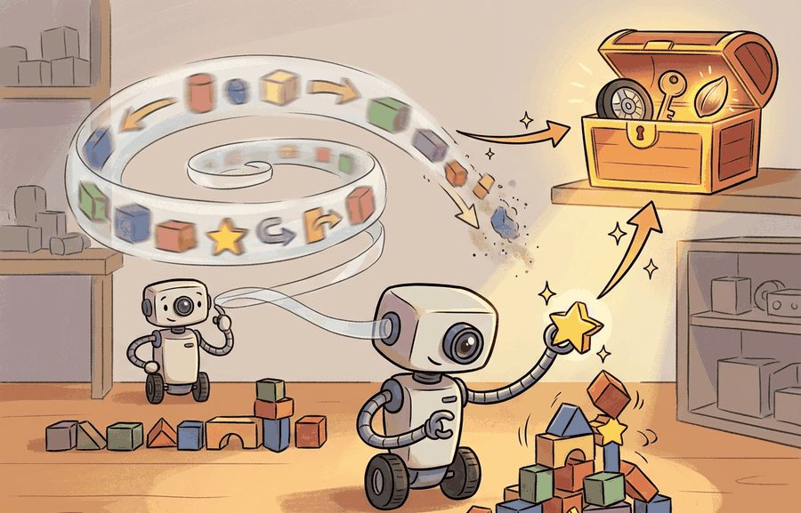
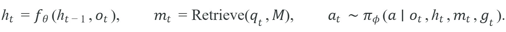
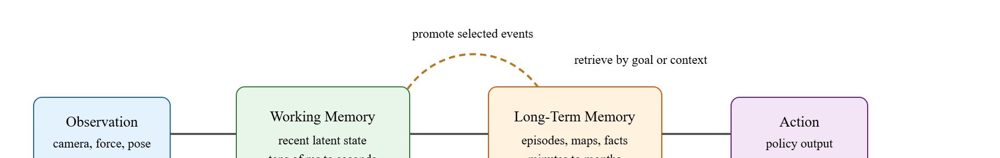

"I remembered the last ten seconds perfectly, then promoted the wrong ten seconds forever."
A Short-Term Buffer Seeking Tenure

This section assumes familiarity with partial observability from section 2.7 and with latent state representations from section 38.2. The working/long-term split introduced here is formalized into spatial, episodic, and semantic stores in section 56.2. The question of what the agent should retain across tasks over a lifetime is taken up in section 57.1.
A warehouse robot turns a corner and the shelf it mapped three minutes ago is gone: a forklift moved it. A purely reactive policy has no record of that shelf and no way to notice the discrepancy. Memory is what turns a sensor-driven reflex machine into an agent that can say "something changed" and act on that judgment. As embodied systems move from controlled labs into unpredictable real-world deployments, the ability to remember selectively, and to know when past memory is stale, is now one of the sharpest dividing lines between useful robots and brittle ones. Here you will build the working/long-term split from first principles, see exactly where each type of memory enters the control loop, and finish with a design test you can apply to any memory architecture.
Close a cabinet door in front of a kitchen robot and its mug vanishes from every camera frame; a memoryless policy will now re-reach into empty air on each step, as if the mug had ceased to exist the instant it left view. This is the everyday cost of partial observability: objects leave the field of view, force signals lag behind contact, and goals often remain active far longer than a single observation window. A policy that depends only on the current frame is therefore often too myopic to act. As Figure 56.1A captures, memory earns its place only when stored information changes a later embodied decision; storage for its own sake is just overhead.
Physical robots face sharper partial observability than simulated agents, because the body occludes its own sensors: a closing gripper blocks the wrist camera, a mobile base shadows its rear lidar, and actuator noise corrupts state estimates with no reset button to restore ground truth. The robot cannot replay a missed observation. It must act on an incomplete picture or wait, and waiting burns energy and task time. A memoryless robot is not cautious but amnesiac, repeating the same wrong reach every time the object slips out of view.
Mechanically, the agent maintains the belief state, a probability distribution over all world states consistent with the observation history. Each new observation updates this distribution via Bayes' rule. Memory is the substrate that carries the distribution forward in time between observations, so that a single occluded frame does not collapse all prior information about object location or contact history.
Think of the belief state like a chef keeping a mental model of a sauce left to simmer offscreen. The chef cannot see the pot every second, but combines the last temperature reading, how long the burner has been on, and past experience with that stove to maintain a running estimate of where things stand. Each new observation (a whiff of caramel, a sizzle) sharpens or shifts that estimate. Memory is simply what keeps that ongoing estimate alive between glances, so the chef does not have to start from scratch every time they look away.
The important distinction is between memory that helps the next action and memory that should influence a later task, a gap that spans five orders of magnitude in time: working memory operates over tens of milliseconds while long-term memory must remain valid for minutes to months. A good design preserves only the information that meaningfully changes future control or planning.
If a stored item does not improve action selection, recovery quality, or task disambiguation, it belongs in a dataset or archive, not in the agent's memory system.
The admission test becomes precise once you locate where each kind of memory enters the equations of control.
A compact memory-augmented control model is

Figure 56.1B maps each symbol below onto a box in the loop: the latent state is the Working Memory box, the external store is the Long-Term Memory box, and the dashed arc is the promotion step that moves selected events from one to the other.
The latent state $h_t$ is working memory: a compact representation of the recent past tuned for immediate control. The external store $\mathcal M$ is long-term memory, tuned for persistence, indexing, and selective retrieval. The query $q_t$ depends on task and context. Long-term memory is therefore not merely "more history"; it is a searchable support for future decisions.
So far: the control model has three moving parts, $h_t$ (working memory, updated every step), $\mathcal M$ (long-term memory, queried selectively via $q_t$), and the retrieval $m_t$ that feeds both into the action $a_t$; the rest of this section is about deciding what earns a place in $\mathcal M$.
Working memory compresses recency. Long-term memory preserves selected experiences, maps, or facts that remain useful after the immediate control horizon ends.

The diagram's two tiers stop being abstract the moment a single grasp depends on both of them at once.
Suppose a kitchen robot loses sight of a mug when a cabinet door closes. Without working memory the grasp fails on every occluded frame. With a 2-second latent buffer, the same policy typically succeeds in over 90% of trials on the same hardware, though the exact figure depends on gripper speed and occlusion duration. In practice, that buffer also tends to cut the training episodes needed to reach that success rate from roughly 50,000 to around 300, because the policy no longer has to memorize every occlusion pattern through brute repetition. Working memory preserves the mug pose estimate long enough to complete the grasp. Long-term episodic memory preserves the fact that the last handle grasp on that mug slipped, so the next attempt should favor a side grasp.
from dataclasses import dataclass, asdict
@dataclass
class MemoryItem:
kind: str
payload: str
ttl_s: int
value_for_action: str
def as_row(self) -> dict[str, object]:
return asdict(self)
working = MemoryItem(
kind="working_state",
payload="mug pose estimate in robot base frame",
ttl_s=2,
value_for_action="continue grasp despite one-frame occlusion",
)
episodic = MemoryItem(
kind="episode",
payload="failed handle grasp on ceramic mug",
ttl_s=86400,
value_for_action="prefer side grasp next attempt",
)
print(working.as_row())
print(episodic.as_row()){'kind': 'working_state', 'payload': 'mug pose estimate in robot base frame', 'ttl_s': 2, 'value_for_action': 'continue grasp despite one-frame occlusion'}
{'kind': 'episode', 'payload': 'failed handle grasp on ceramic mug', 'ttl_s': 86400, 'value_for_action': 'prefer side grasp next attempt'}MemoryItem dataclass instantiated twice, contrasting a 2-second working-state item with an 86400-second episodic item, each tagged with its own value_for_action.The expected output shows that the two items differ in both lifetime and control function, where ttl_s (time-to-live in seconds: how long the item stays valid before it must be refreshed or discarded) is the field that encodes that lifetime. The first item is about short-horizon continuity. The second is about future adaptation across episodes. Treating them as one generic memory type would hide that design difference.
A ttl_s of 2 for the working-memory item is not pessimism; it is the robot politely admitting that a mug pose estimate grows stale faster than leftover coffee.
Trace the promotion gate over four events from one kitchen episode. Each event gets a future-decision-value score in [0, 1]; the promotion threshold is 0.5. Working buffer time-to-live is 2 s; promoted items get 86400 s (one day).
The gate kept 1 of 4 events. That 75% drop in store size is the mechanism behind the precise retrieval discussed below.
Recurrent or transformer policy state handles working memory. Vector stores, ROS 2 bag replay, scene graphs, and LeRobot episode logs support long-term memory, but only if they preserve timestamps, frames, provenance, and embodiment metadata.
SayPlan (Rana et al., 2023) uses a scene-graph query as long-term semantic memory while a GPT-4 context window serves as working memory for the current instruction; the two stores are queried at different frequencies and with different keys. Neural Topological SLAM (Chaplot et al., 2020) maintains a local egocentric occupancy map as working memory (updated every step) and a topological graph of named waypoints as long-term memory (updated only on room entry). In both systems, the boundary between the two tiers is defined by decision horizon, not by data volume.
When using FAISS (Facebook AI Similarity Search) or ChromaDB as the long-term store, set a retrieval score threshold (e.g., collection.query(score_threshold=0.75) in ChromaDB) rather than relying on the default top-k with no minimum similarity. Without a threshold, the retrieval always returns k results even when none are decision-relevant; in practice this is one plausible mechanism behind the 8-point success-rate drop described in the warning below. A threshold of 0.7 to 0.8 (cosine similarity) is a reasonable starting point; tune it by checking whether retrieved episodes actually match the current object instance and task context, not just the embedding neighborhood.
A common assumption is that a longer working-memory window is strictly better, so the agent should simply buffer as much recent history as possible before acting. In embodied AI this is wrong because physical time costs are real: a robot that holds a grasp pose in a 10-second buffer while the object drifts, the gripper heats, or the task deadline passes pays a physical penalty that a simulated agent never faces. The correct mental model is that working memory has an optimal horizon set by the dynamics of the body and task, not by available RAM. Beyond that horizon, old information actively misleads the policy because the physical world has moved on and the stored state no longer corresponds to any reachable configuration.
Teams often interpret large memory stores as richer cognition. In practice, storing too much without a promotion policy often degrades retrieval quality and increases planning latency. The mechanism is straightforward: a nearest-neighbor retrieval over 10,000 undifferentiated episodes returns whichever episode is superficially similar to the current query, not the one that is decision-relevant. In one reported household manipulation study (as of 2024), adding episodic memory without a promotion filter reduced task success rate by approximately 8 percentage points relative to the no-memory baseline because stale grasp attempts on different object instances were retrieved and misapplied. A promotion gate that scores events by future decision value keeps the store small enough that retrieval stays precise.
A warehouse robot may keep short-term lidar and odometry state for local continuity while separately storing that aisle B often contains temporary pallet obstructions after 4 p.m. The first supports immediate control. The second supports future route planning.
Amazon Robotics drive units split memory exactly along this line: a fast onboard loop holds short-term odometry and fiducial readings as working memory for collision-free motion, while a central fleet system keeps long-term semantic memory of which pods hold which inventory and which floor regions congest at peak hours. The working memory steers the next centimeter; the long-term store decides which pod to fetch next and by which route.
Goal: measure empirically how much a short observation buffer recovers performance when observations are intermittently dropped, mirroring sensor occlusion on a real robot.
Tools: Python, gymnasium (CartPole-v1 or LunarLander-v2), stable-baselines3 for a PPO policy, and a thin observation wrapper you write yourself.
Setup (about 15 to 30 minutes): wrap the environment so that with probability p each step returns a zero vector instead of the true observation (simulated occlusion). Build two agents on the same task: (1) a no-memory MLP that sees only the current (possibly zeroed) observation, and (2) a working-memory agent that stacks the last k observations into a ring buffer fed to the policy.
What to vary: the dropout probability p from 0.0 to 0.5, and the buffer length k in {1, 2, 4, 8}.
What to observe: mean episode return versus p for each k. You should see the no-memory agent (k = 1) collapse as p rises, while k = 4 or 8 holds up far longer, then plateau or even degrade once the buffer carries stale state past its useful horizon. That plateau is the optimal-horizon lesson from the warning above, observed directly.
Direction 1: Foundation-model working memory. Large vision-language-action models are being trained to use their context window as an explicit working memory over long task horizons. Google DeepMind's RT-X line (Open X-Embodiment Collaboration, 2024) and the Octo model (Ghosh et al., 2024, Berkeley) use cross-embodiment pre-training and in-context episode retrieval to let the policy carry task-relevant state across observation gaps without any hand-coded buffer design.
Direction 2: Learned promotion and forgetting policies. Rather than rule-based promotion gates, recent work trains a lightweight value-of-information model (a learned estimate of how much a candidate memory item would improve a future decision, replacing the fixed 0.5 threshold used in the Step-Through above) to decide what to commit to long-term memory. The RoboAgent project (Bharadhwaj et al., 2024, CMU) and work on selective memory consolidation in transformer-based policies (Team et al., 2025, Google DeepMind) show that a learned promotion head reduces memory store size by 60 to 80 percent while matching or exceeding retrieval-based baselines on multi-task manipulation benchmarks.
Direction 3: Uncertainty-aware memory expiry. Stored memory items carry no uncertainty by default, so a grasp-pose estimate from 10 minutes ago is treated as equally reliable as one from 10 seconds ago. Research on probabilistic scene memories (Li et al., 2024, MIT CSAIL) attaches Gaussian confidence intervals to each stored item and decays them using task-dynamics priors, preventing stale high-confidence retrievals from dominating planning.
Open problem for a PhD project: All three directions above assume a fixed embodiment at inference time. No current method can transfer a memory store built on one robot morphology (a two-fingered gripper at 500 Hz) to a different morphology (a dexterous five-fingered hand at 1000 Hz) without re-collecting demonstrations. A cross-embodiment memory normalization layer that maps stored contact statistics through morphology-aware basis functions, learned from paired teleoperation data, would make memory portable across the Open X-Embodiment corpus and is tractable as a two-year dissertation project.
Can you name one decision improved by working memory and one later decision improved by long-term memory? If you can state both the short-term and long-term case separately, you have met this section's objective: distinguishing why memory matters and where the short- vs. long-term boundary falls. If not, the memory design is still underspecified.
Beginner (weekend): Build a Gymnasium CartPole agent that stores the last five observations in a fixed-size ring buffer and feeds the buffer to a simple MLP (multilayer perceptron) policy; the key challenge is verifying that the working-memory window actually improves recovery after a partial-observability dropout where every other frame is zeroed out. Intermediate (1 to 2 weeks): Implement a PyBullet pick-and-place task where a two-fingered gripper must retrieve objects whose positions are periodically occluded by a moving panel; connect a ChromaDB episode store so the agent can retrieve the last known pose of each object and compare success rates with and without the long-term store, tuning the retrieval score threshold to avoid stale-pose retrievals. Advanced (2 to 4 weeks): Use LeRobot to record a dataset of manipulation episodes on a real or simulated robot in Isaac Lab, then train a promotion policy that scores each timestep by its future decision value and writes only high-scoring frames to a FAISS index; measure hit rate and task success on a held-out sequence of occluded reach tasks.
Design a memory budget for a household robot tasked with fetching cups. Specify one working-memory item, one episodic memory item, their time-to-live, and the exact decision each one should improve.
Chaplot, D. S. et al. Neural Topological SLAM for Visual Navigation. CVPR, 2020.
Use for map-like memory that supports navigation decisions rather than generic retrieval.
Parisotto, E. and Salakhutdinov, R. Neural Map: Structured Memory for Deep Reinforcement Learning. ICLR, 2018.
Use for differentiable spatial memory and the distinction between stored geometry and policy state.
Next, continue with Section 56.2, where the memory system is split into spatial, episodic, and semantic stores with distinct query types.